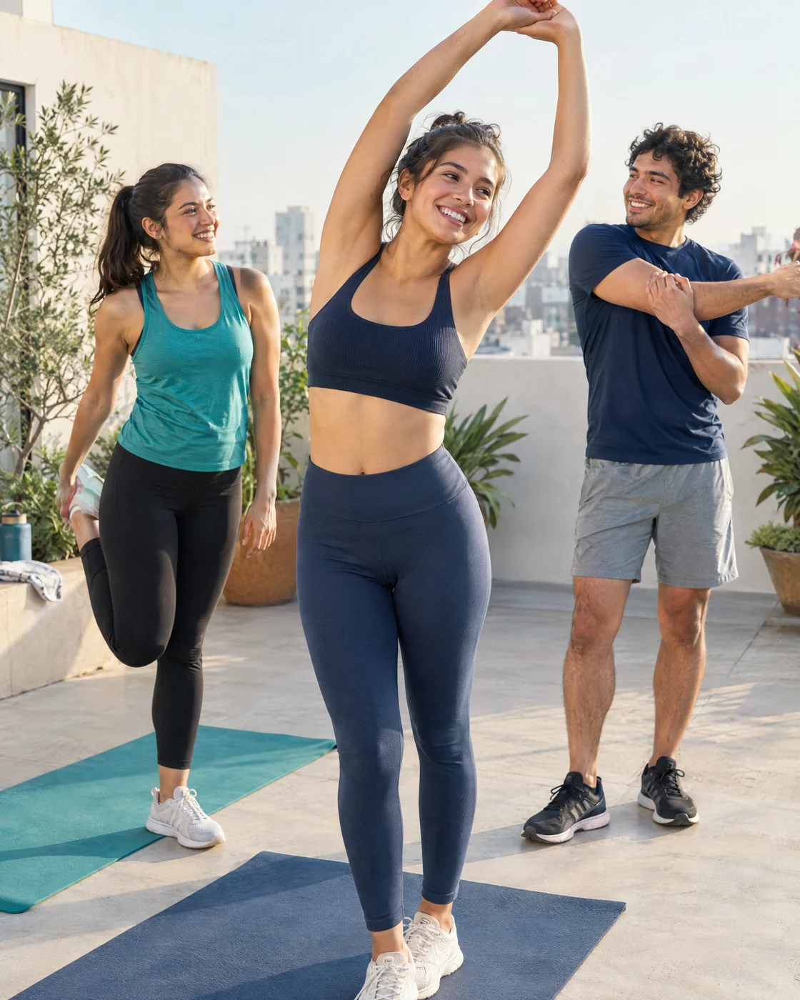
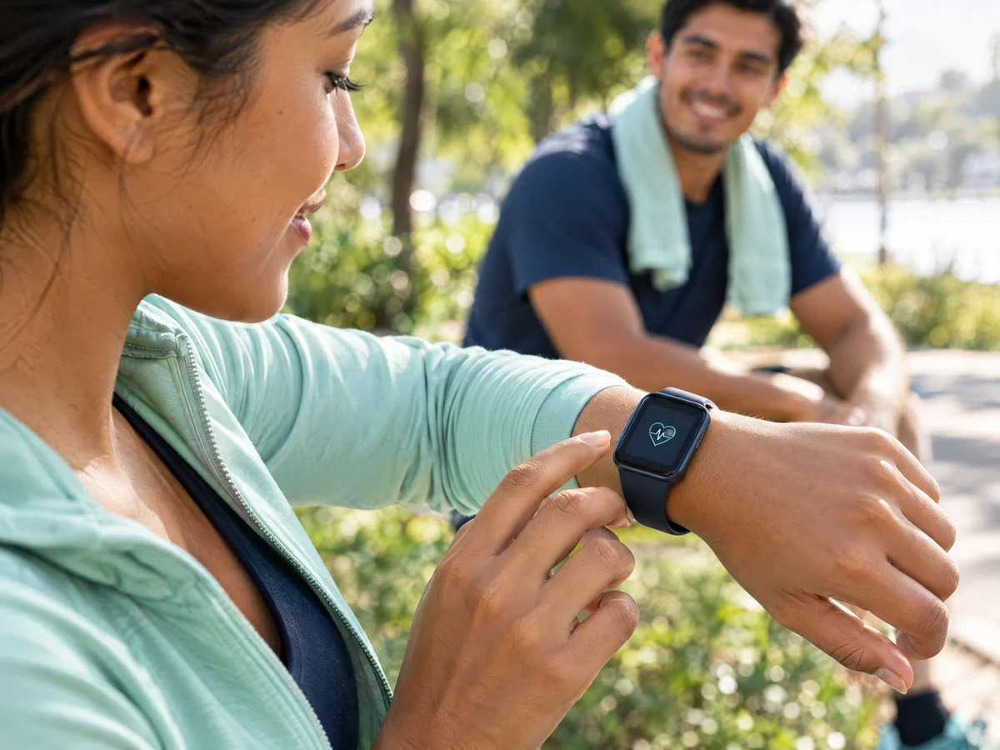
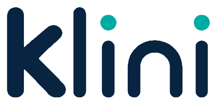

Yoga y comunidad · web
Portada: jóvenes compartiendo yoga y estiramientos. Mantener formato vertical. Versión optimizada.
1120 × 1400 px · 187.2 KBsitio/assets/wellness-yoga.webpDescargar archivoCatálogo visual de Klini: tres fotografías de campaña, sus originales, logotipos e iconografía para integrar la nueva landing page.
Ver la página completa
Portada: jóvenes compartiendo yoga y estiramientos. Mantener formato vertical. Versión optimizada.
1120 × 1400 px · 187.2 KBsitio/assets/wellness-yoga.webpDescargar archivoPortada: jóvenes compartiendo yoga y estiramientos. Mantener formato vertical. Original de alta resolución.
2048 × 2560 px · 7406.4 KBrecursos/originales/klini-wellness-yoga.pngDescargar archivoJóvenes haciendo ejercicio y conectando en comunidad. Versión optimizada.
1200 × 900 px · 175.2 KBsitio/assets/wellness-running.webpDescargar archivoJóvenes haciendo ejercicio y conectando en comunidad. Original de alta resolución.
2560 × 1920 px · 6956.8 KBrecursos/originales/klini-wellness-running.pngDescargar archivo
Consulta de un indicador ilustrativo de bienestar en un reloj. Versión optimizada.
1200 × 900 px · 93.6 KBsitio/assets/wellness-watch.webpDescargar archivoConsulta de un indicador ilustrativo de bienestar en un reloj. Original de alta resolución.
2560 × 1920 px · 5725.3 KBrecursos/originales/klini-wellness-watch.pngDescargar archivo
Azul y turquesa para fondos claros.
SVG vectorial · 41.2 KBsitio/assets/klini.svgDescargar archivoUna tinta para fondos oscuros.
SVG vectorial · 41.2 KBsitio/assets/klini-white.svgDescargar archivoLetra k para pestañas del navegador.
SVG vectorial · 13.4 KBsitio/assets/favicon.svgDescargar archivoÍcono individual del sistema SVG incluido en el código.
SVG vectorial · 0.3 KBrecursos/iconos/persona.svgDescargar archivoÍcono individual del sistema SVG incluido en el código.
SVG vectorial · 0.3 KBrecursos/iconos/carpeta.svgDescargar archivoÍcono individual del sistema SVG incluido en el código.
SVG vectorial · 0.3 KBrecursos/iconos/documento.svgDescargar archivoÍcono individual del sistema SVG incluido en el código.
SVG vectorial · 0.4 KBrecursos/iconos/salud.svgDescargar archivoÍcono individual del sistema SVG incluido en el código.
SVG vectorial · 0.2 KBrecursos/iconos/confirmacion.svgDescargar archivoÍcono individual del sistema SVG incluido en el código.
SVG vectorial · 0.3 KBrecursos/iconos/ver-contrasena.svgDescargar archivoÍcono individual del sistema SVG incluido en el código.
SVG vectorial · 0.2 KBrecursos/iconos/cerrar.svgDescargar archivoÍcono individual del sistema SVG incluido en el código.
SVG vectorial · 0.2 KBrecursos/iconos/reproducir.svgDescargar archivoÍcono individual del sistema SVG incluido en el código.
SVG vectorial · 0.2 KBrecursos/iconos/menu.svgDescargar archivoÍcono individual del sistema SVG incluido en el código.
SVG vectorial · 0.2 KBrecursos/iconos/mas.svgDescargar archivoÍcono individual del sistema SVG incluido en el código.
SVG vectorial · 0.3 KBrecursos/iconos/candado.svgDescargar archivoÍcono individual del sistema SVG incluido en el código.
SVG vectorial · 0.2 KBrecursos/iconos/actividad.svgDescargar archivoÍcono individual del sistema SVG incluido en el código.
SVG vectorial · 0.3 KBrecursos/iconos/comunidad.svgDescargar archivoÍcono individual del sistema SVG incluido en el código.
SVG vectorial · 0.3 KBrecursos/iconos/reloj.svgDescargar archivoÍcono individual del sistema SVG incluido en el código.
SVG vectorial · 0.3 KBrecursos/iconos/hidratacion.svgDescargar archivoÍcono individual del sistema SVG incluido en el código.
SVG vectorial · 0.2 KBrecursos/iconos/descanso.svgDescargar archivoÍcono individual del sistema SVG incluido en el código.
SVG vectorial · 0.3 KBrecursos/iconos/bienestar.svgDescargar archivoAzul #082441 · Turquesa #00AAA5 · Turquesa oscuro #007D79 · Menta #DDF3EF · Fondo suave #F5F9F8.
DejaVu Sans Regular y Bold, incluidas dentro de sitio/assets. Licencia tipográfica.